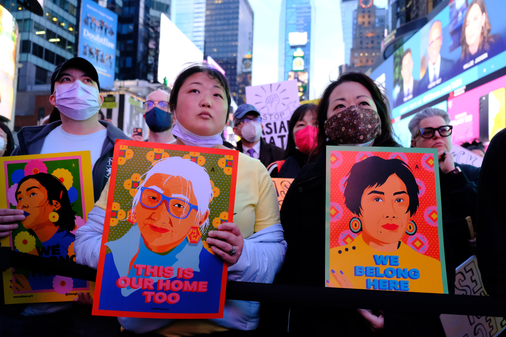
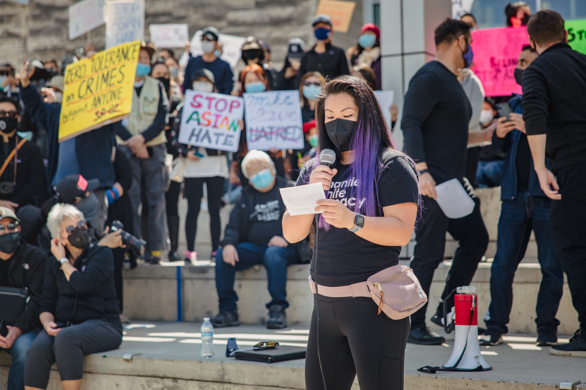

Educating yourself on the topic of a social issue is crucial in contributing to participating in activism and support for that movement. Being able to know more about a topic allows you to be able to help others most effectively. Educating yourself and learning more about these hate crimes through articles or social media posts are easy ways to show support.
Here are some resources you can start with:
Instagram: @dearasianyouth
New York Times - Asian Hate Crimes
Science.org - Stop Dismissing Anti-Asian Racism
NYC.gov - Stop Asian Hate

Photo is by Katie Godowski on Pexels
Supporting and proposing policies to your government officials allows your country’s leaders to hear first-hand the interests of citizens and, when put in place, would result in direct changes in social issues.
Here are resources you can use to support certain policies:
NAPAWF.org - Anti-Racism Petitions
How Do I Advocate for Policy Change?
Legislative Rally - Talk Directly to Congress

Photo is by Jason Leung on Unsplash
Donating to charities that support social issues allow people to directly help those who are affected, such as providing them with financial support, food, etc.
Here are some places you can donate to help out your community:
GoFundMe - Stop AAPI Hate
HouseBeautiful.com - Stop AAPI Hate Fundraisers
Handfuls of Asian hate crimes are not talked about in mainstream media because they are underreported. By reporting a hate crime and/or incident, you can help bring light and attention to this issue. Reporting an incident also helps bring assistance to those affected.
You can report incidents of violence against Asian Americans here: